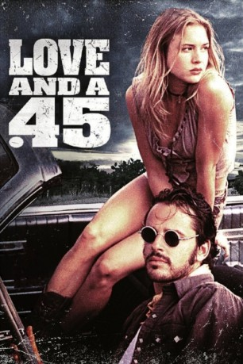
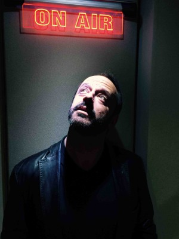

#6886 Love and a .45
 
 IMDB-Wertung: 6.1 / 10
IMDB-Wertung: 6.1 / 10  Tomatometer: 83
Tomatometer: 83  Metascore: 0
Metascore: 0 
Watty, Starlene und Billy bewohnen einen Trailerpark. Mit Raubüberfällen verschaffen sie sich den ultimativen Adrenalinkick, bis der psychopathische Billy bei einem davon eine Kassiererin erschießt. Starlene und Watty wollen ohne ihn weiter machen, doch nachdem Starlene von Texas Rangern zusammengeschlagen wird, erschießt Watty die Polizisten. Das Pärchen muss fliehen, denn jetzt ist der gesamte Staat auf ihren Fersen und sie haben dem nichts weiter außer ihrer Liebe entgegenzubringen - und ihre Fünfundvierziger.
Jahr: 1994
Dauer: 102 Minuten
FSK: 18
Land: USA Studio: Lions Gate Films Home EntertainmentTonspuren:
Untertitel: Deutsch, Englisch,
Auflösung: 1080p (1920x1080) Größe: 7147 MB
Genre: Thriller, Krimi, Liebe
Regisseur: C.M. Talkington
Drehbuch: C.M. Talkington
Soundtrack:
Darsteller:
-  Gil Bellows als Watty Watts
 Renée Zellweger als Starlene Cheatham
Renée Zellweger als Starlene Cheatham Rory Cochrane als Billy Mack Black
Rory Cochrane als Billy Mack Black Jeffrey Combs als Dinosaur Bob
Jeffrey Combs als Dinosaur Bob- Jace Alexander als Creepy Cody
- Ann Wedgeworth als Thaylene Cheatham
 Peter Fonda als Vergil Cheatham
Peter Fonda als Vergil Cheatham- Wiley Wiggins als Young Clerk
 Jack Nance als Justice Thurman
Jack Nance als Justice Thurman- Charlotte Ross als Mary Ann
 Michael Bowen als Ranger X
Michael Bowen als Ranger X- Richard Rothenberg als Camera Store Clerk
 Brad Leland als Armored Truck Driver
Brad Leland als Armored Truck Driver- Darin Scott als Crime Channel Reporter , uncredited
- Tammy Le Blanc als Stripper
- Scott Roland als Simp
- Todd Conner als Young Cop
- Stopher Finley als Young Kid
- Augustin Solis als Border Guard
- Kevin Berve als Guy on Pay Phone , uncredited
- Reverend Horton Heat als Musical Artists , uncredited
Datei: X:\FSK18-1900-1999\Love and a .45 (1994, FSK18, 1920x1080).mkv seit 06.09.2017
Festplatte: FSK18
 Es gibt insgesamt 108 Filme in der Gruppe 'FSK18-1900-1999'
Es gibt insgesamt 108 Filme in der Gruppe 'FSK18-1900-1999'